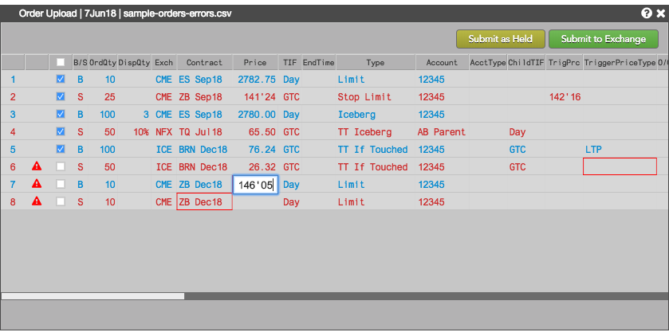
Note: When you correct all errors for an order, the error icon is removed and the check box is enabled so you can submit the order.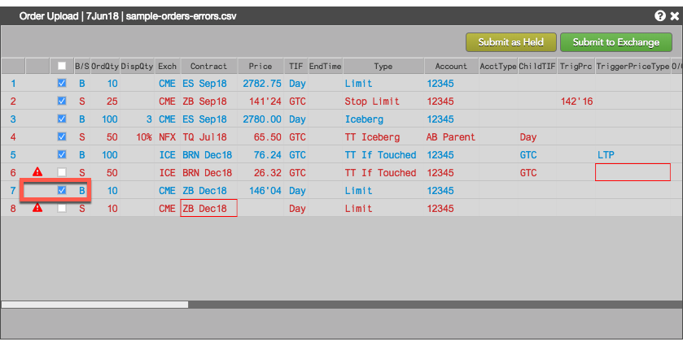
You can use the Order Upload feature to submit orders into the TT platform using a comma-separated (.csv) file.
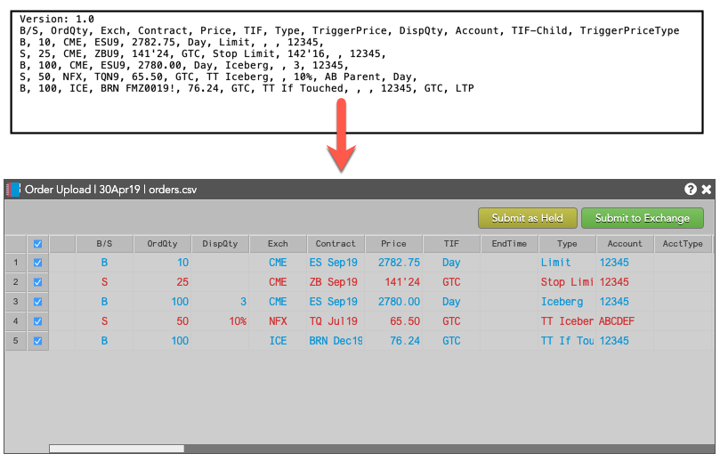
Before uploading orders, the .csv files must be properly formatted. The Order upload .csv file format help describes the format of the order upload file and the supported order parameters.
Additionally, you must be authorized in Setup to trade with all accounts provided in the upload file.
To upload orders from a orders .csv file:
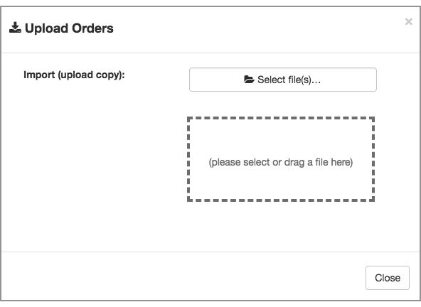
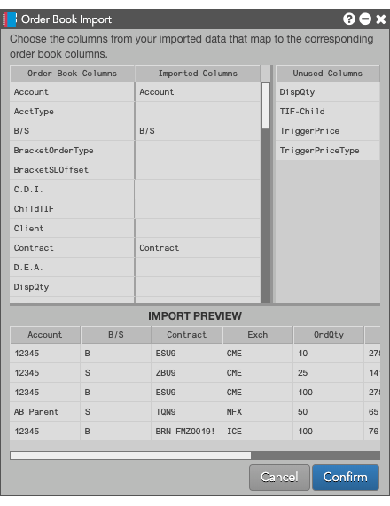
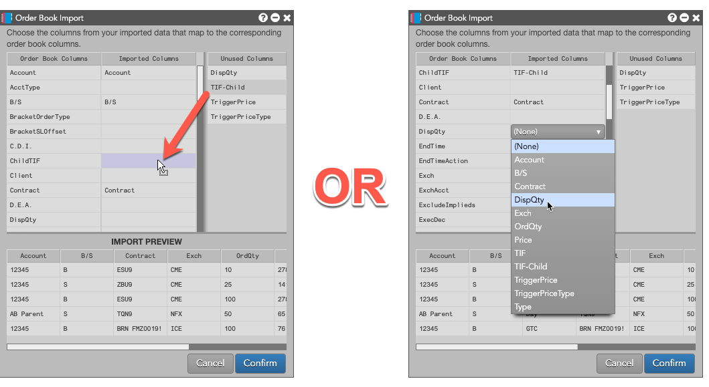
The IMPORT PREVIEW panel presents a preview of the information for the orders defined in the uploaded .csv files. The panel displays only the first ten orders; all of the orders are imported, however.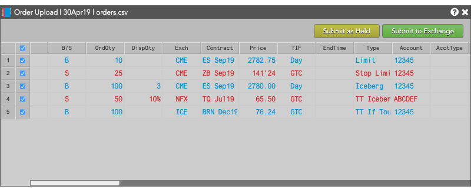
Note: You do not have to map all columns. Data for unmapped columns will be ignored during the import.To submit the uploaded orders:
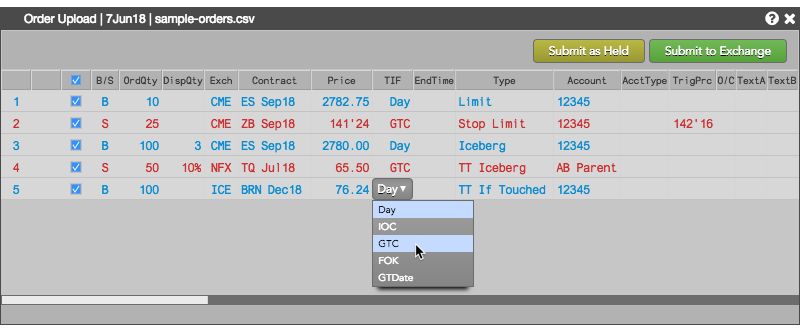
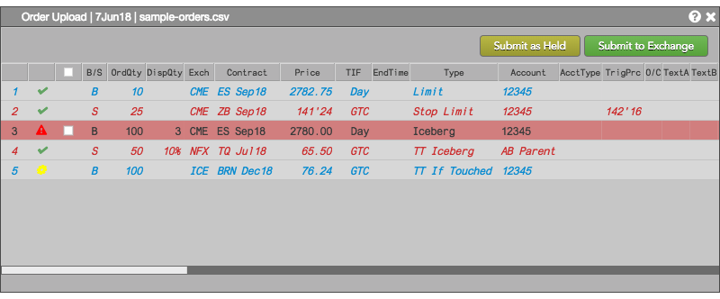
To give you visual cues for orders successfully submitted:If the uploaded file contains errors, such as missing or invalid values, the corresponding order rows are disabled and problematic order parameter values are highlighted.
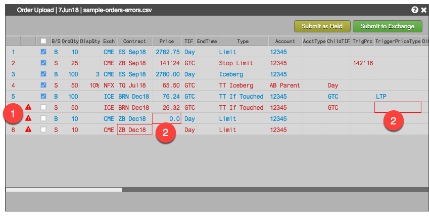
To correct errors:
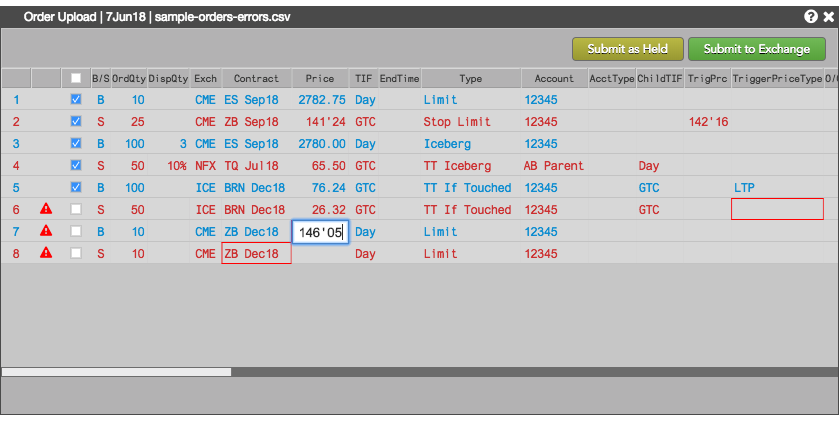
Note: When you correct all errors for an order, the error icon is removed and the check box is enabled so you can submit the order.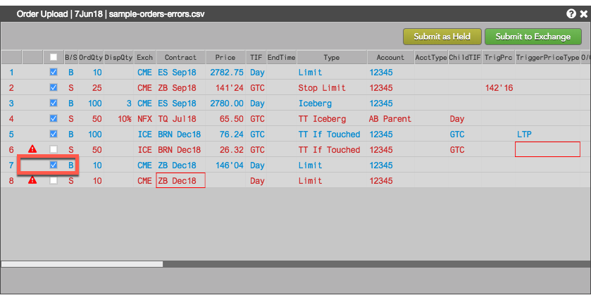
In row 8 of the the previous example, the Contract field for the order (ZB Dec18) is highlighted as an error with error message "Contract: Missing instrument data", even though the contract name looks correct. This error commonly occurs when using the wrong contract name. In this case, the .csv file contained the following entry for the last order.
S, 10, CME, ZB Dec18, 151'14, Day, Limit, , , 12345,,
As described in the Order upload .csv file format help, all contracts must be specified using the exhange-provided "short" contract name, which is listed in the Instrument Data dialog (Type Shift-Ctrl-X in MD Trader or Market Grid row).
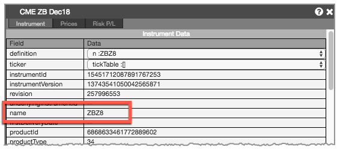
Because the order entry in the .csv file identified the contract by specifying "ZB Dec18" instead of "ZBZ8", the upload identified the contract name as an error.